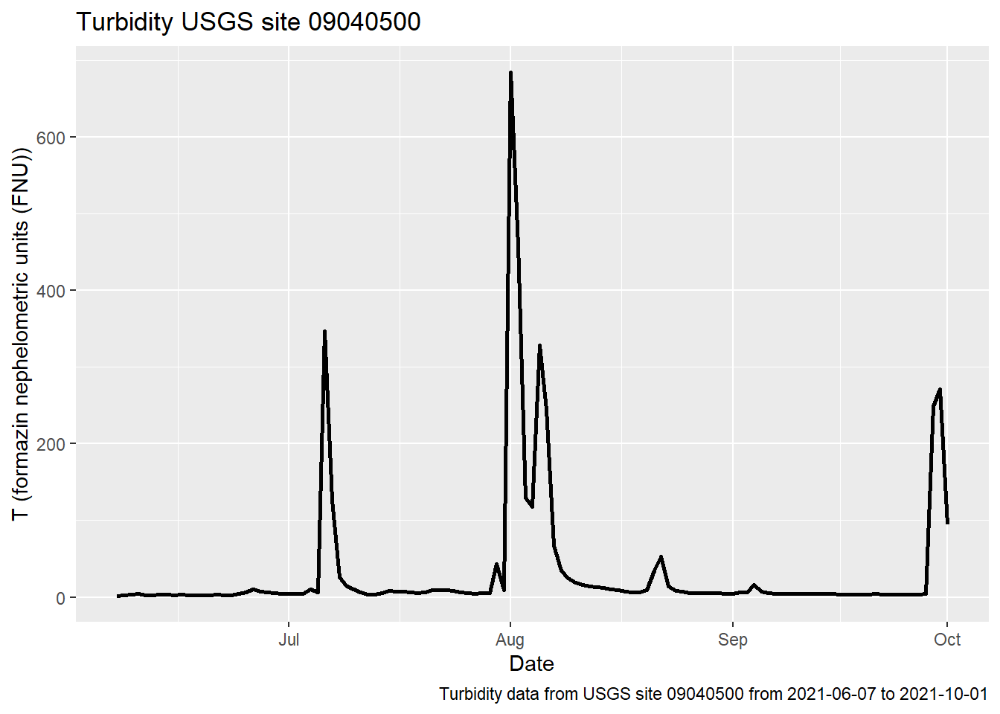

3 Results
3.1 Discharge Data
3.1.1 Plotted Data
# Plot for discharge
ggplot(q, aes(x = Date, y = q_cfs)) +
geom_line() +
ylab('Q (cfs)')## Warning: Removed 38 row(s) containing missing values (geom_path).ggplot(q_ind, aes(x = Date, y = q_in))+
geom_line()+
ylab('Q (in/day)')## Warning: Removed 38 row(s) containing missing values (geom_path).# site_no2
ggplot(q2, aes(x = Date, y = q_cfs)) +
geom_line() +
ylab('Q (cfs)')## Warning: Removed 23 row(s) containing missing values (geom_path).
ggplot(q2_ind, aes(x = Date, y = q_in))+
geom_line()+
ylab('Q (in/day)')## Warning: Removed 38 row(s) containing missing values (geom_path).# site_no3
ggplot(q3, aes(x = Date, y = q_cfs)) +
geom_line() +
ylab('Q (cfs)')ggplot(q3_ind, aes(x = Date, y = q_in))+
geom_line()+
ylab('Q (in/day)')## Warning: Removed 38 row(s) containing missing values (geom_path).
# control site
ggplot(qC, aes(x = Date, y = q_cfs)) +
geom_line() +
ylab('Q (cfs)')ggplot(qC_ind, aes(x = Date, y = q_in))+
geom_line()+
ylab('Q (in/day)')## Warning: Removed 38 row(s) containing missing values (geom_path).3.1.2 Trending Month Mean, Min, and Median Data
ggplot(q_month_means, aes(x = year, y = q_mean))+
geom_point()+
facet_wrap(~month, scales ='free',)+
scale_y_log10()+
labs(title = 'Monthly Mean Dishcarge',
caption = 'Mean dishcarge for January (1) to December (12) from the year 1986 to 2021',
x = 'Q (cfs)',
y = 'Years')## Warning: Removed 2 rows containing missing values (geom_point).
ggplot(q_month_mins, aes(x = year, y = q_min))+
geom_point()+
facet_wrap(~month, scales ='free')+
scale_y_log10()+
labs(title = 'Monthly Minimum Discharge',
caption = 'Minimum dishcarge for January (1) to December (12) from the year 1986 to 2021',
x = 'Q (cfs)',
y = 'Years')## Warning: Removed 3 rows containing missing values (geom_point).
ggplot(q_month_medians, aes(x = year, y = q_median))+
geom_point()+
facet_wrap(~month, scales ='free')+
scale_y_log10()+
labs(title = 'Monthly Median Discharge',
caption = 'Median dishcarge for January (1) to December (12) from the year 1986 to 2021',
x = 'Q (cfs)',
y = 'Years')## Warning: Removed 3 rows containing missing values (geom_point).
3.2 Turbidity
# site 1
ggplot(Turbidity_1, aes(x = Date, y = mean)) +
geom_line(size = 1) +
labs(title = 'Turbidity USGS site 09034250',
caption = 'Turbidity data from USGS site 09034250 from 2021-06-22 to 2021-10-01',
x = 'Date',
y = 'T (formazin nephelometric units (FNU))')
# site 2
ggplot(Turbidity_2, aes(x = Date, y = mean)) +
geom_line(size = 1) +
labs(title = 'Turbidity USGS site 09040500',
caption = 'Turbidity data from USGS site 09040500 from 2021-06-07 to 2021-10-01',
x = 'Date',
y = 'T (formazin nephelometric units (FNU))')
# site 3
ggplot(Turbidity_3, aes(x = Date, y = mean)) +
geom_line(size = 1) +
labs(title = 'Turbidity USGS site 09014050',
caption = 'Turbidity data from USGS site 09014050 from 2010-04-13 to 2021-10-01',
x = 'Date',
y = 'T (formazin nephelometric units (FNU))')
#control site
ggplot(Turbidity_C, aes(x = Date, y = mean)) +
geom_line(size = 1) +
labs(title = 'Turbidity USGS site 09060799',
caption = 'Turbidity data from USGS site 09060799 from 2021-07-15 to
2022-04-07',
x = 'Date',
y = 'T (formazin nephelometric units (FNU))')3.3 Combined Data
3.3.0.1 Discharge
ggplot(Q_c, aes(x= site_no, y= q_cfs))+
geom_boxplot()+
scale_y_log10()## Warning: Removed 172 rows containing non-finite values (stat_boxplot).
3.3.1 Turbidity
ggplot(T_c, aes(x= site_no, y= mean))+
geom_boxplot()+
scale_y_log10()+
labs(title = "Site Locations Turbidity",
x = "Site",
y = "Turbidity formazin nephelometric units (FNU)")## Warning: Removed 1 rows containing non-finite values (stat_boxplot).